This document describes how to check out the source for the RSE Extensions, and how to do basic development activity.
The source for the RSE Extensions is hosted in a Subversion repository under OS/400. The project itself is developed from within WDSC 6.0. To gain access to the source code, you need to first install Subclipse, the Subversion client for WDSC 6.0/Eclipse 3.x. The installation instructions for Subclipse can be found here: http://subclipse.tigris.org/install.html
The rest of this document assumes that you have installed Subclipse and restarted WDSC.
A new feature in WDSC 6.0 is something called "capabilities." WDSC contains a lot of tools; capabilities offer a way to expose to users only the functionality that they need.
Two sets of capabilities we need are turned off by default in WDSC. They are called Team Support and Plug-in Development support.
To turn them on, choose Window -> Preferences to open the WDSC preferences. Then choose Workbench -> Capabilities. This screen appears:
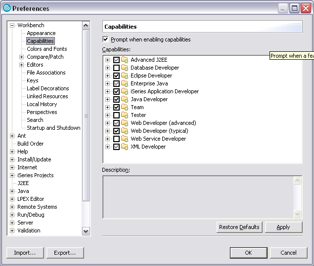Check the boxes for Team and Eclipse Developer; then click OK.
To access the source, you need to define a connection to the Subversion repository that hosts this project. The first step in that process is to open the SVN Repository Exploring perspective. Choose Window -> Open Perspective -> Other. A screen like this appears:
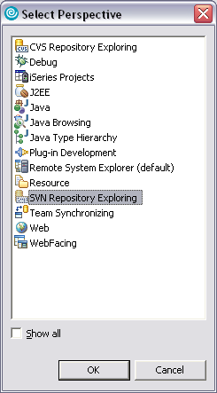Select SVN Repository Exploring perspective and click OK. You should see something like this:
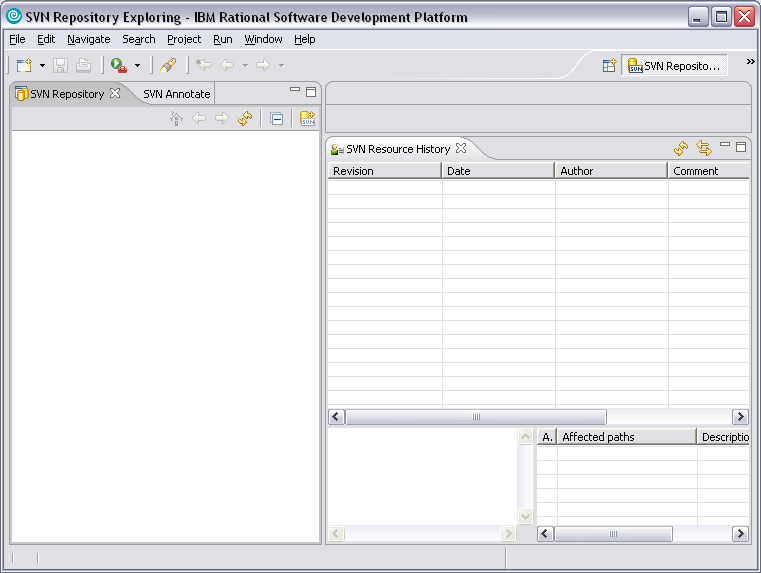Now you can define a connection to the repository. Click the New Connection icon in the toolbar of the SVN Repository view. The Add SVN Repository dialog appears:
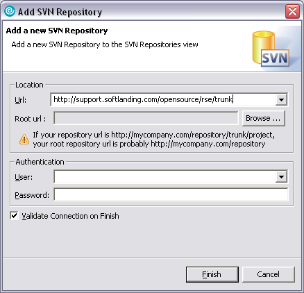In the URL field, enter this value:
http://support.softlanding.com/opensource/rse/trunk
That URL is where this project is stored in the repository. Do not click OK yet.The next step is to specify the root URL of the Subversion repository. Click the Browse... button. This screen appears:
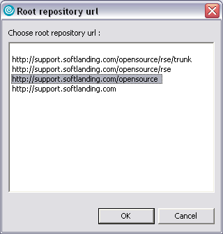Select the value shown in the screenshot -- http://support.softlanding.com/opensource -- and click OK. That returns you to the dialog, which now looks like this:
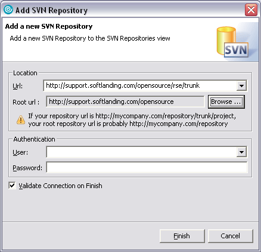Click OK to add the SVN Repository. (Keep in mind that you could have specified the root URL in both locations. By specifying a location within the repository, you save some navigation steps later.) After you click OK, you should see your new connection in the list. Expand it to show the projects. It should look like this:
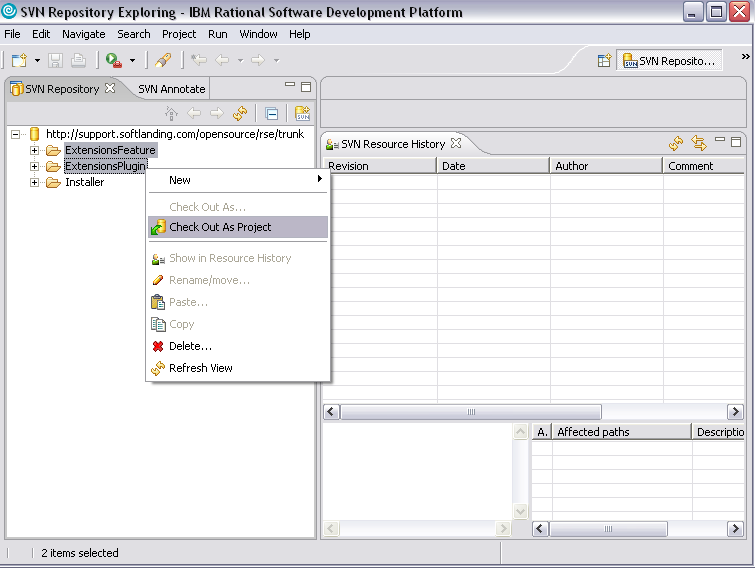As shown in the above screenshot, right click on the two projects and choose Checkout As Project. This copies the source for the two projects from the repository into your local WDSC workspace. When the checkout process is complete, use the same technique described earlier to switch to the Plug-in Development perspective. You should see something like this:
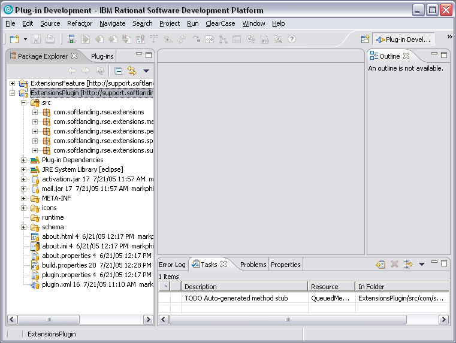At this point, the source for the project has been checked out to your workspace and you can start making changes. Let's make a very simple change to illustrate WDSC's plug-in development process.
For this change, we will modify the plug-in to write some text to System.out when the plug-in starts. This will be enough to show the development and testing process for a plug-in. To begin, open the source for the main plug-in class which is named ExtensionsPlugin.java and is stored in the com.softlanding.rse.extensions package.
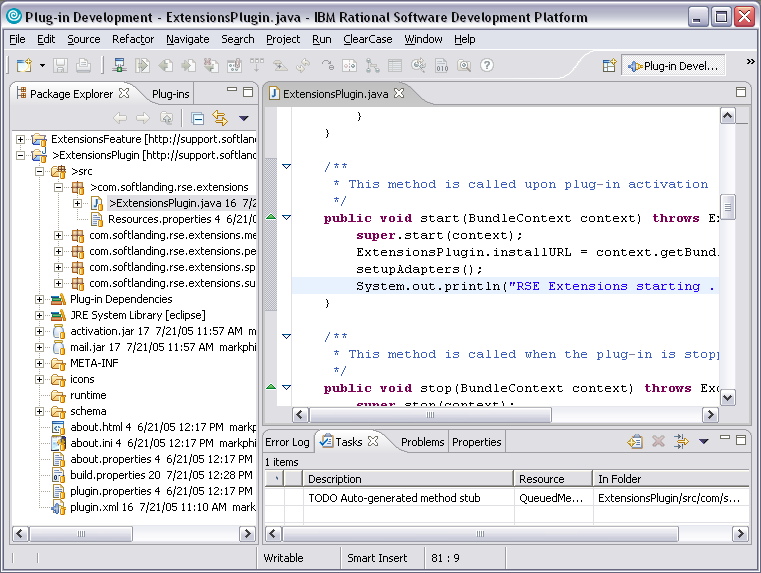Find the startup() method. Add the code that is highlighted above, and click Save.
Now that we've made a change, our next step is to test. WDSC includes something called a Run-time Workbench. This allows you to start a second instance of WDSC in which you can test any plug-in that you are developing. As shown in the next screen, choose Run -> Run...
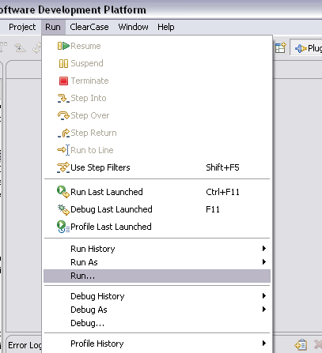The Run dialog appears. This is where you define your launch configuration. (Note that you need only define your launch configuration once. After that, you can easily relaunch using the Runtime Workbench option on the Run As... submenu.) You can also launch in Debug mode to debug your changes.
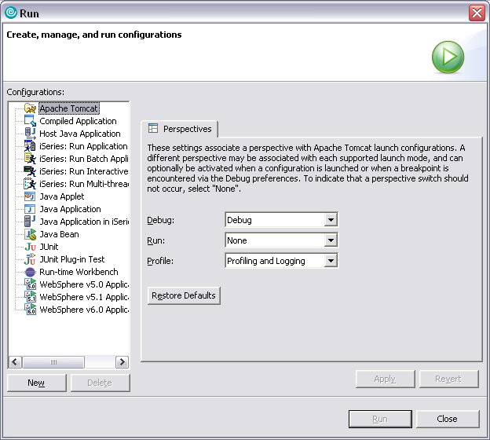In the above dialog, click Run-time Workbench, then New.
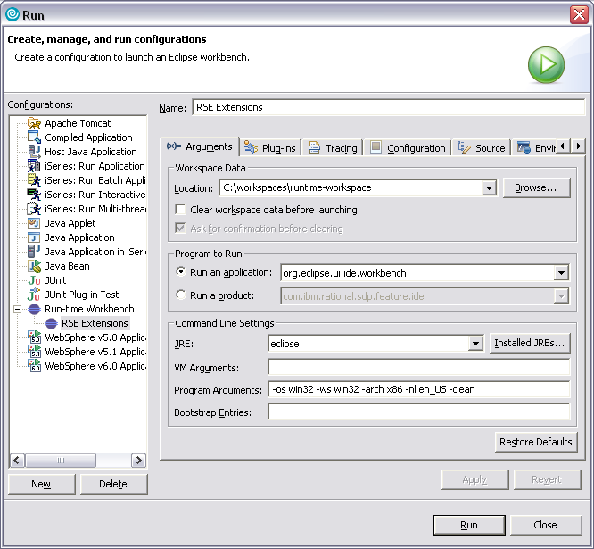You might want to customize the location of the run-time workspace, but other than that you can accept the default values.
Do NOT change the run-time workspace to point to your main workspace.
Click Apply, and then OK to Run. This will start a second instance of WDSC.
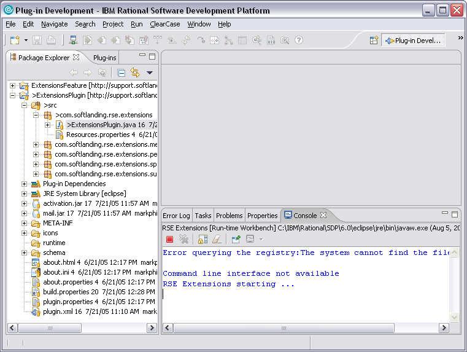If you were doing a real change, you would now likely test or debug it in the second instance of WDSC. In this case, what we care about actually appears in the first instance, in the Console view. As you see in the above screenshot, the message we added appears.
(If the Console view is not open, choose Window -> Show View -> Other. It is located under the "Basic" grouping.)
If there is enough interest/demand, this section will eventually expand to include information about submitting patches. For now, here are some simple instructions. Right click on the project and choose Team -> Create Patch. Follow the wizard and save your patch to a text file. Then email the file to dougd at softlanding dot com. You get the idea.
Thanks!